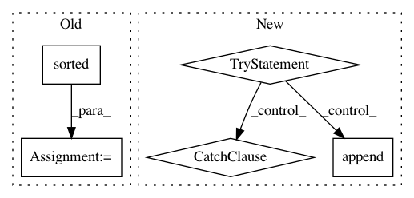

5810701ca3a9fae4ef3baada2a137ee5a660353b,noxfile-template.py,,,#,25
Before Change
// Any default versions that should be ignored.
IGNORED_VERSIONS = ["2.7"]
TESTED_VERSIONS = sorted([v for v in ALL_VERSIONS if v not in IGNORED_VERSIONS])
//
// Style Checks
//
After Change
}
try:
// Ensure we can import noxfile_config in the project"s directory.
sys.path.append(".")
from noxfile_config import TEST_CONFIG_OVERRIDE
except ImportError as e:
print("No user noxfile_config found: detail: {}".format(e))
TEST_CONFIG_OVERRIDE = {}
// Update the TEST_CONFIG with the user supplied values.
TEST_CONFIG.update(TEST_CONFIG_OVERRIDE)
def get_pytest_env_vars():
In pattern: SUPERPATTERN
Frequency: 3
Non-data size: 5
Instances
Project Name: GoogleCloudPlatform/python-docs-samples
Commit Name: 5810701ca3a9fae4ef3baada2a137ee5a660353b
Time: 2020-05-15
Author: tmatsuo@google.com
File Name: noxfile-template.py
Class Name:
Method Name:
Project Name: astroML/astroML
Commit Name: 72cb7a23af6fbe31367cbfcbbe13994455708593
Time: 2019-01-02
Author: bsipocz@gmail.com
File Name: doc/sphinxext/numpy_ext/docscrape.py
Class Name: ClassDoc
Method Name: __init__
Project Name: GoogleCloudPlatform/python-docs-samples
Commit Name: 8c18cecf15a8935d8bf712edcc91ac05daf2176e
Time: 2020-06-16
Author: tmatsuo@google.com
File Name: appengine/standard/noxfile-template.py
Class Name:
Method Name: